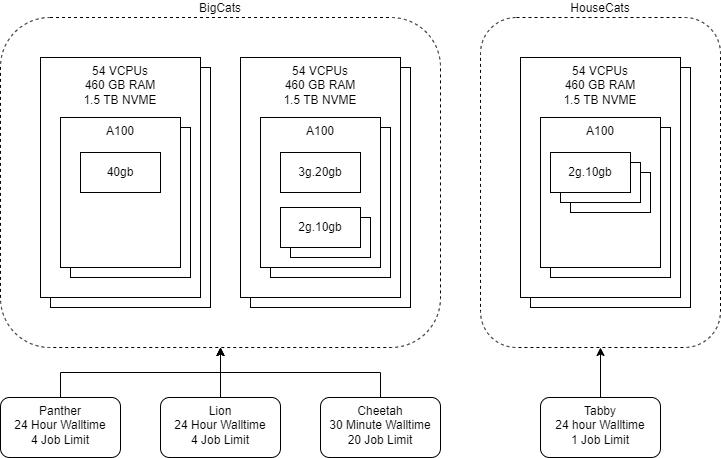

Partitions and Qualities of Service
MLeRP workloads are able to make use of the attached NVME on the compute nodes by writing to /tmp. These files will remain accessible for the course of your job.
MLeRP is designed to be flexible. It is split into two partitions: HouseCats and BigCats.

The HouseCats is optimised for user friendliness, featuring GPU reservations. However, reservations are in limited supply, and restricted to the smallest sizes of GPUs. Once users become more comforatble with the platform and are ready to scale up their work, we encourage users to move to the BigCats partition which features larger GPU sizes and more flexible and powerful ways to interact with the cluster.
HouseCats Partition
Tabby QoS
The is where we expect most users to start their journey with us. The Tabby service is optimised for user friendliness by giving a GPU reservation which gives an experience similar to running a notebook on your own desktop or on Google Collab.
We reccommend the Tabby QoS terminals for managing environments as both conda and mamba are memory intensive processes, furthermore, some packages such as py-xgboost-gpu require a GPU to be present during install.
- Job type: GPU Reservations
- Walltime: 24 hours
- Job limit: 1
- Strudel flavour:
- 6 VCPUs
- 56 GB RAM
- 10 GB VRAM GPU
Ideal for:
- Notebook based development
- Data exploration
- Data visualization
- New users who just want to get started with minimal setup
- Running terminal applications which need GPU access
- Installing packages which require a GPU to be detectable
BigCats Partition
Panther QoS
The Panther QoS is restricted to CPU only work but features the longest walltime of any QoS on the MLeRP platform. This makes it a perfect choice as the host for a jupyter notebook that sends larger workloads out to Dask workers. It is also well suited towards any low compute work such as file system management.
- Job type: CPU only notebooks or terminals
- Walltime: 7 days
- Job limit: 4
- Strudel flavour:
- 4 VCPUs
- 8 GB RAM
Ideal for:
- Notebooks supported by Dask workers
- Data processing
- Rapid and flexible iteration during development
- Experimenting with techniques
- File management
See our tutorials for more details and this FAQ for advice on requesting resources through the Dask scheduler.
Cheetah QoS
The Cheetah QoS is optimised for work that can be split into many smaller jobs. Dask workers will default to using this queue allowing them to spin up quickly as its much easier to clear the resources for smaller short jobs than larger ones. The small walltime allows Cheetah jobs to be taken on by the cluster whenever there is room, allowing your workload to scale up and down and adapt to the ‘weather’ of the cluster.
This service is also suitable for any pre or post processing jobs which can be done on individual samples by batching your work to be handled in chunks rather than clearing the resources needed to process everything at once.
Since Cheetah QoS jobs are intended to be short lived, ensure that you are checkpointing your work periodically so that in the event that your worker needs to be restarted you can resume your work with minimal interuption.
- Job type: Short running dask workers or batch jobs
- Walltime: 30 minutes
- Job limit: 20
- Strudel flavour:
- N/A
Ideal for:
- Dask workers
- Data processing
Lion QoS
The Lion QoS is for our power users. If you need to perform CPU intensive data processing, or if you need access to GPUs larger than what’s available through the Tabby QoS, this service is for you.
This service is ideal for batch processing such as model training or hyperparamter sweeps. Alternatively, if you’re working with large models, such as transformers, consider consider using this QoS to back your Dask workers instead to allow for longer lived jobs.
If you would like to run a process that runs for more than the maximum walltime, checkpoint your work and submit multiple successive jobs.
- Job type: Batch submission or CPU intensive work
- Walltime: 24 hours
- Job limit: 4
- Strudel flavour:
- 8 VCPUs
- 64 GB RAM
Ideal for:
- Dask workers for larger models (eg transformers)
- Model training
- Heavy duty processing
- Hyperparameter sweeps
Estimating your job requirements
By default, when submitting a job outside of Strudel, such as with a Dask SLURMCluster or through SBATCH submission, our cluster will provide you with 12 CPUs / GPU and 8 GB RAM / CPU. If unspecified, jobs will be submitted to the Cheetah QoS with a walltime of 30 minutes.
Every research problem has its own demands and constraints, so you’ll need to adapt your cluster to suit your use case. If your work is primarily CPU bound, Dask allows as many tasks as you have CPU cores, but if you are using GPUs you may want to dramatically limit this. One process per GPU could be a good place to start.
Configuring your Dask SLURMCluster
Dask SLURMClusters give you the ability to send individual cells of your notebook to be evaluated by the SLURM queue, which gives you access to the full power of the cluster from the convenience of your notebook.
You can start a Dask SLURMCluster from your notebook with this code snippet:
from dask_jobqueue import SLURMCluster
from distributed import Client
# Point Dask to the SLURM to use as it's back end
cluster = SLURMCluster(
<cluster configurations>
)
cluster.adapt(<number of workers>)
client = Client(cluster)The cluster.adapt method allows your SLURMCluster to grow and shrink to your notebook’s demands. This is perfect while you’re still developing your code since the resources can be released back into the pool while you’re editing your code and requested again once you’re ready to run.
The cluster.scale method can be used instead to keep your SLURMCluster at a fixed size instead. If you have finished developing your code and want to run your model’s training consider switching to this instead as it will lead to a more stable experience.
cluster.scale(<number of workers>)
client = Client(cluster)Here are some example cluster configurations for you to consider:
# Small GPU
SLURMCluster(memory="48g", processes=1, cores=6, job_extra_directives=["--gres=gpu:2g.10gb:1"])
# Multi GPU
SLURMCluster(memory="96g", processes=1, cores=12, job_extra_directives=["--gres=gpu:2g.10gb:2"])
# Medium GPU
SLURMCluster(memory="96g", processes=1, cores=12, job_extra_directives=["--gres=gpu:3g.20gb:1"])
# Half Node:
# * Lion QoS as the backend as we'll need longer lived jobs to work with this scale of compute
SLURMCluster(memory="192", processes=1, cores=24, job_extra_directives=["--gres=gpu:40gb:1", "--qos=lion"])
# Large CPU
SLURMCluster(memory="64g", processes=16, cores=16)
# CPU multiprocessing
SLURMCluster(memory="4g", processes=1, cores=1) Please have a read of our tutorials for more info on Dask SLURMClusters in the MLeRP environment.
Batch submission
If you have finished developing the code for your model and you are ready to train, batch submission may be more appropriate than notebook development as the execution of your training will not be dependent on your browser’s connection.
This will involve submitting an sbatch script such as the one below:
#!/bin/bash
#SBATCH --job-name=<job name>
#SBATCH --account=<your MLeRP username>
#SBATCH --time=<walltime (max 24:00:00)>
#SBATCH --ntasks=<number of processes>
#SBATCH --cpus-per-task=1
#SBATCH --gres=gpu:<size of gpu>:<number of gpus>
#SBATCH --partition=BigCats
#SBATCH --qos=lion
. /path/to/conda/environment/bin/activate
python script.pyNow, you can submit this job to the cluster:
sbatch <options> /path/to/sbatch/scriptIf you submit a job by mistake, or would like to terminate it early, you can cancel a job:
scancel jobid